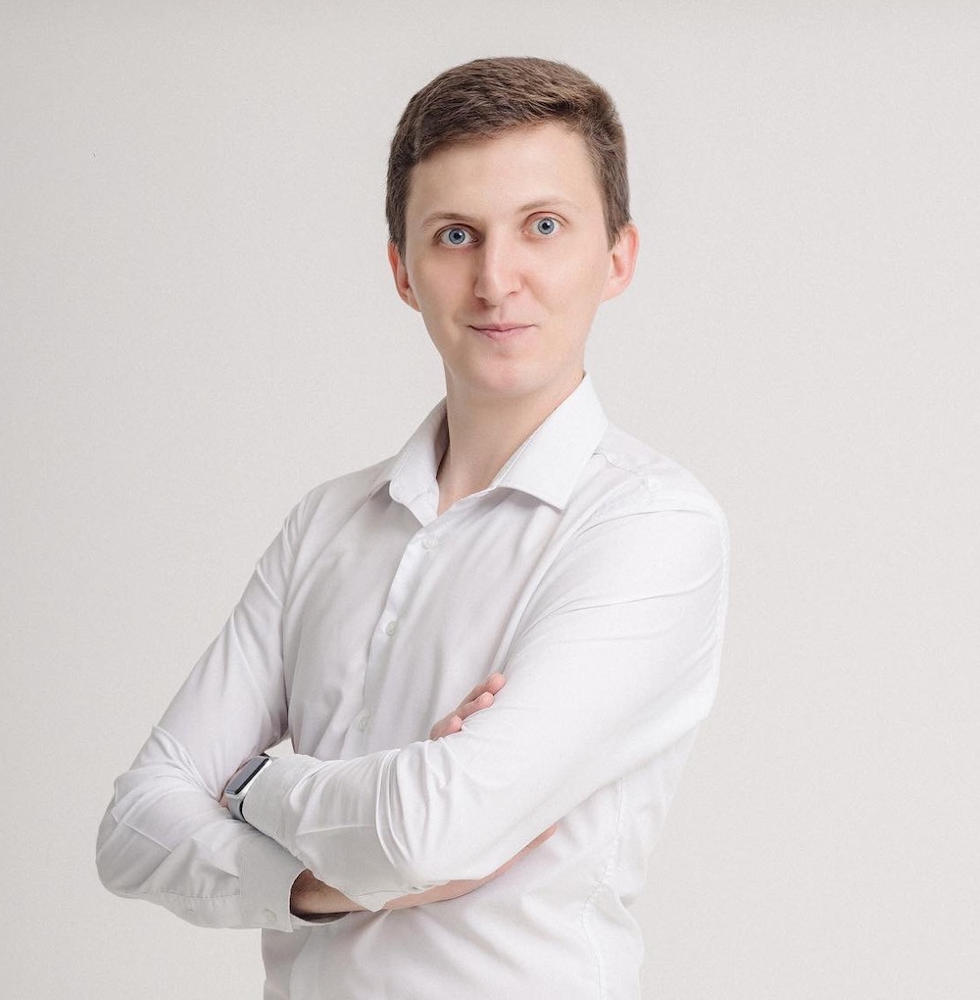

ДМИТРИЙ РУДНИК
QA ENGINEER
КОНТАКТЫ
-

-

-

-
Буэнос-Айрес, Аргентина
-
НАВЫКИ
-
Jira, Confluence, Яндекс.Трекер, Redmine, TestRail, TestIT, Qase IO, Jenkins, Newman, Allure, Telegram API, MySQL, PostgreSQL, Chrome Devtools, Browserstack. Знаю: JavaScript, TypeScript, Dart, Playwright, Cypress, Flutter.
Умею работать с GitLab: настраивать CI/CD, pipelines и pages.
Умею работать с БД и Mock в Playwright. Есть опыт создания с нуля инфраструктуры для автотестирования. Уделяю большое внимание тестовой документации.
Написал телеграм бота , который парсит объявления с самых популярных сайтов по поиску недвижимости в Буэнос-Айресе и показывает ее пользователям в соответствии с выбранными фильтрами.
ЯЗЫКИ
-
Испанский - A2
ОПЫТ РАБОТЫ
-
QA ENGINEER AUTOMATION
-
Perfluence - Платформа по работе с блогерами и инфлюенсерами.
-
Занимаюсь автоматизацией процессов тестирования.
Мои основные задачи- Написание UI-тестов для Web с использованием Playwright и JavaScript;
- Написание автотестов для Flutter приложений на iOS и Android с использованием реальных устройств и эмуляторов в XCode и Android Studio
С нуля создал инфраструктуру для автотестирования по нескольким продуктам компании.
Создал коллекцию API тестов в Postman и написал API-тесты с использованием Postman и Playwright.
Работал с ботами Telegram и Telegram API.
Настроил CI/CD, pipelines и Allure-отчет с ежедневной отправкой отчета в Telegram и деплоя в pages для контроля работы автотестов.
Выполнил миграцию тест-кейсов из одной системы ведения тестовой документации в другую.
-
QA ENGINEER
-
Металлинвестбанк. Подразделение работы с юридическими лицами.
-
Занимался тестированием фронтенда и бекенда Web приложения в продуктовой команде.
В моей зоне ответственности было:- Функциональное тестирование нового продукта;
- Регрессионное тестирование существующего;
-
Много работал с Postman: с нуля создал коллекцию как простых, так и автоматизированных проверок. Писал новые тест-кейсы и поддерживал в актуальном виде существующие.
Помогал тимлиду с онбордингом новых сотрудников и координацией работы тестировшиков внутри команды.
Тесно взаимодействую с разработчиками и аналитиками, для улучшения качества продукта и тестирования, а также постоянно предлагаю различные идеи, для улучшения работы отдела тестирования. -
Достижения:
Для проведения регрессионного тестирования написал проект по автотестированию UI с использованием Cypress, JavaScript и Allure-отчетов. Настроил его запуск с использованием Jenkins и Newman.
-
JUNIOR QA ENGINEER
-
Fliit GmbH - Продуктовая логистика
-
В качестве члена команды разработки мною выполнялись задачи ручного тестирования:
- Создание тест сценариев при помощи TestRail;
- Выполнение тестовых планов (регрессионное тестирование, исследовательское тестирование);
- Заведение и описание багов, контроль баг фиксов;
- Координация по статусу готовности проекта.
ОБРАЗОВАНИЕ
-
СПЕЦИАЛИСТ - ИНЖЕНЕР ПО СПЕЦ. АЭС
-
НИЯУ «МИФИ», МОСКВА, РОССИЯ
-
ТЕСТИРОВЩИК С НУЛЯ. WEB, MOBILE, POSTMAN, SQL, GIT, BASH
-
Курс Артёма Русова
-
ANALISTA DE SISTEMAS
-
Escuela Da Vinci, Buenos Aires